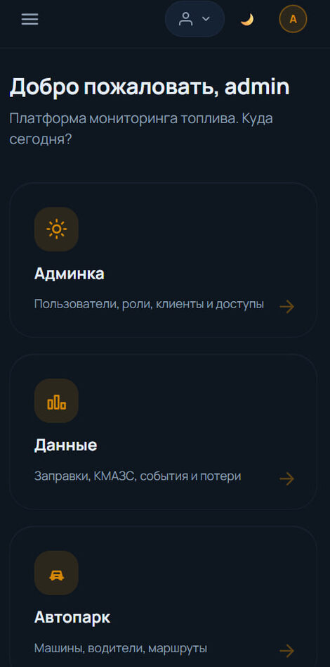
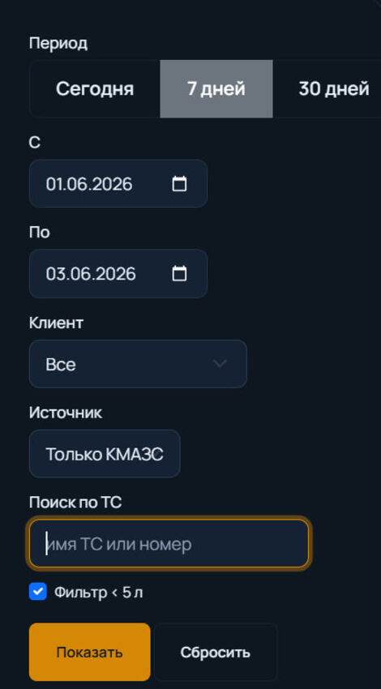

FuelMonitor — платформа контроля топлива
От продуктовых задач до инженерных вызовов
Класс задач, который решает этот проект
Многие бизнес-задачи сводятся к одному тяжёлому паттерну: есть несколько независимых систем, каждая знает свою часть правды, и нигде эти части не сведены воедино.
Данные приходят в разных форматах, по разным каналам, с опечатками и пропусками, а общего идентификатора, по которому их можно связать, попросту не существует.
FuelMonitor — характерный пример. Две независимые системы учёта: одна знает, сколько ресурса выдали, другая — сколько реально дошло до получателя. Пока они порознь, расхождение доказать невозможно. Мы свели их в одно окно так, чтобы расхождение было видно автоматически по каждой операции.
Технические вызовы и как мы их решали
-
01Сопоставление сущностей без общего идентификатора
Связать записи из двух систем, у которых нет общего ключа, а данные «грязные» — опечатки, разные раскладки, дубли, идентификатор внутри другого поля. Решение — многопроходный алгоритм: точное совпадение → нечёткое (с учётом опечаток) → вероятностное восстановление по косвенным признакам. Неуверенные совпадения система не «проглатывает» молча — спорные случаи уходят оператору на подтверждение в один клик.
-
02Интеграции с учётом несовершенства внешнего мира
Два разных канала: файловый обмен в реальном времени (несколько форматов, авто-восстановление после сбоев) и внешнее API с жёсткими лимитами (дробление запросов, мониторинг квоты, различение «нет данных» и «ошибка»). На каждый автоканал — ручной дубль на случай сбоя.
-
03Multi-tenant с гарантированной изоляцией
Один экземпляр обслуживает множество клиентов в иерархии «партнёр → клиент». Изоляция проходит сквозь всю систему на уровне архитектуры — чужие данные не увидеть даже правкой адресной строки. Проверяется отдельными автотестами.
-
04Контроль качества данных как часть продукта
Система сама помечает подозрительные записи по правилам — оператор идёт по списку проблем, а не разбирает всё подряд. Аномалии и противоречия между источниками поднимаются наверх автоматически.
-
05Производительность и надёжность под реальные объёмы
Пакетная обработка ускорила импорт в десятки раз (критично при тысячах операций в сутки). Тяжёлые пересчёты — только при реальных изменениях. Ключевые этапы логируются: при разборе инцидентов всегда понятно, где что произошло.
Результат
- Разрозненные источники сведены в единую картину — расхождения видны автоматически по каждой операции.
- Сопоставление без общего ключа работает на реальных грязных данных, со встроенным ручным контролем спорных случаев.
- Производительность выдерживает реальные объёмы; изоляция данных гарантирована архитектурно.
- 350+ автотестов (парсеры, алгоритмы, контроль доступа, изоляция, сквозные сценарии), логирование, готовность к эксплуатации на боевом сервере.
Как это выглядит



Что это значит для вашего проекта
FuelMonitor — один из примеров того, какой уровень сложности мы берём. Делаем веб-сервисы и платформы под ключ — от понятных продуктовых задач до тех, где готового решения не существует и архитектуру с алгоритмами приходится проектировать с нуля.
- Проектируем архитектуру, которая выдержит рост — несколько клиентов, изоляция данных, реальные объёмы, надёжность.
- Придумываем алгоритмы под задачу — сопоставление, скоринг, восстановление пропусков там, где нет готовых библиотек.
- Доводим до продакшена — с тестами, логированием и эксплуатацией на боевом сервере, а не «демку, которая работает на чистых данных».
Если у вас есть задача — от привычной до такой, за которую другие не берутся, — давайте обсудим.